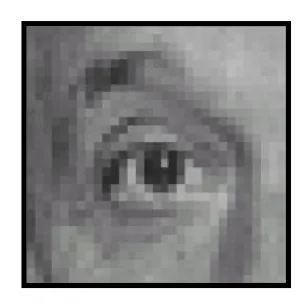
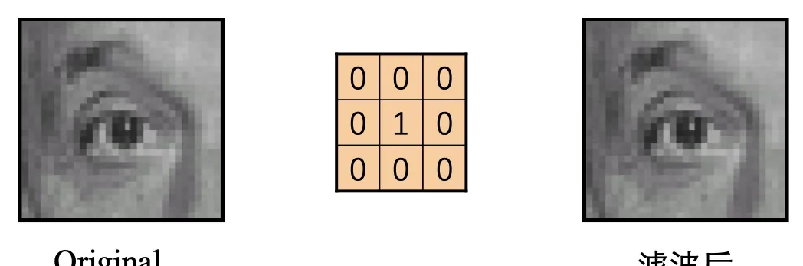
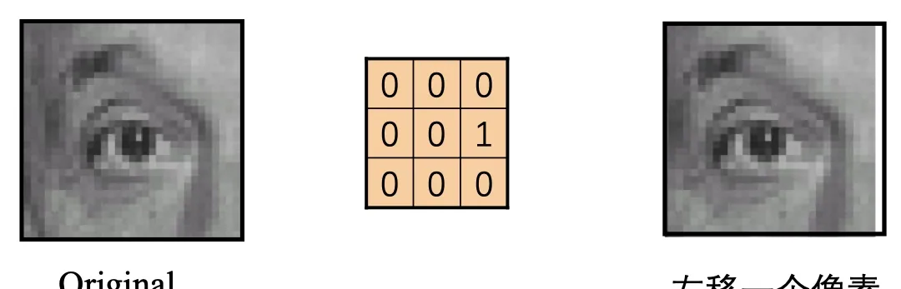
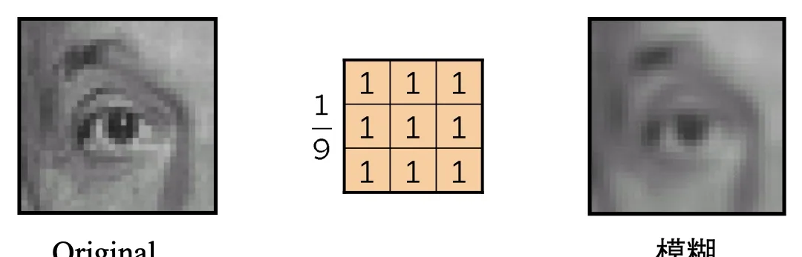
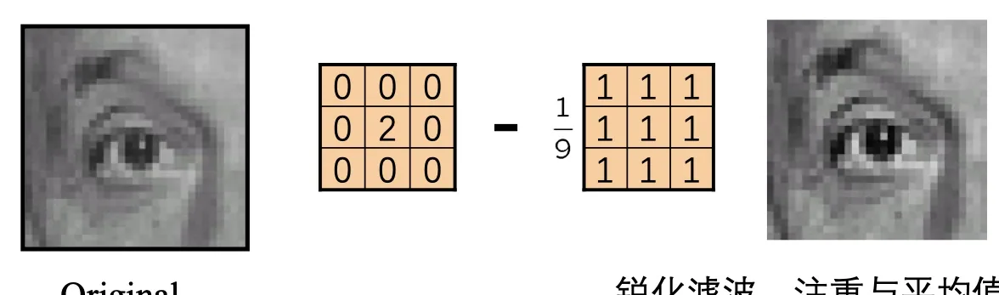

计算机视觉 · 第 2 章 图像处理基础
2.10 滤波案例分析
前面几节分别讲了三件事：噪声从哪里来，均值、中值、高斯滤波各自怎么算，以及「互相关与卷积」的形式化定义。这一节把定义落回最直观的地方——拿同一张很小的测试图，换四个不同的 3×3 核各滤波一次，看输出图像究竟变成什么样子。四个案例依次回答：什么样的核什么都不改变、什么样的核把图像平移、什么样的核把图像变模糊、什么样的核让图像变锐利。把这四张图看懂，「滤波就是邻域像素的加权和」这句话就不再是抽象的公式。
1. 实验是怎么做的
课件用一张很小的灰度测试图（图 1）：它的像素少到可以逐个观察，课件因此把它放大显示。测试图旁边是一个 3×3 的核，也就是前面讲过的滤波矩阵；提问页上输出图像的位置画着一个问号，下面四个案例就是依次来回答这个问号。
计算过程与前面完全一样：把核盖在测试图的一个位置上，核的 9 个权重与它盖住的 9 个像素按位相乘再求和，得到输出图像上对应位置的像素值；然后让核从左到右、从上到下逐位置滑动，重复同样的计算。所以输出图像上的每一个像素，都只由输入图像上以它为中心的 3×3 邻域决定——换一个核，就是换一套「邻域里各路信息各占多少分量」的规则。

2. 案例 1：单位核——输出与输入完全相同
第一个核只在正中心取 1，其余 8 个位置全是 0：
0 0 0
0 1 0
0 0 0用它做加权求和时，除了中心像素被乘以 1，邻域里其他像素都被乘以 0，等于根本没参与计算。因此输出图像与原图逐像素相同（图 2）。这样的核叫单位核（恒等核），它是「什么都不做」的滤波。
这个案例本身就是一句总结：核的权重决定谁说话、说得多大声；只有中心有权重，结果就等于把原图原样搬运一遍。

3. 案例 2：把 1 挪开一位——图像平移
第二个核的唯一一个 1 不在中心，而在中心的右边：
0 0 0
0 0 1
0 0 0这时输出像素取的是「中心右边那个像素」的值，于是整幅图像向左平移一个像素（图 3）：原本位于 (x+1, y) 的像素，滤波后出现在 (x, y) 的位置上。
课件在提问页上专门注了一句「（假定卷积核已经旋转）」。按卷积的定义，做卷积前要先把核旋转 180°，课件展示的是已经旋转过的核，所以这里看到 1 在右边、图像就往左走一位。把这句话和定义对上，就不会再被「卷积要翻转核」这条规则绕晕。

4. 案例 3：全 1 的核——图像变模糊
第三个核把 9 个位置全部取 1：
1 1 1
1 1 1
1 1 1输出像素是 3×3 邻域内 9 个像素的和，也就是邻域的平均（实际使用时通常还要除以 9，把整体亮度拉回来，课件这里只写出了核的权重）。一个像素原本只代表它自己，现在它必须和 8 个邻居「分摊」，亮暗的突变被抹平，图像因此变得模糊（图 4）。
这正是第 2.4 节的均值滤波，也解释了为什么核越大越模糊：核越大，参与平均的邻居越多，单个像素携带的信息被摊得越开。

5. 案例 4：中心为正、邻域为负——图像变锐利
第四个核由两部分相减得到：一个中心为 2 的单位核，减去一个全 1 的核。
0 0 0 1 1 1 -1 -1 -1
0 2 0 − 1 1 1 = -1 1 -1
0 0 0 1 1 1 -1 -1 -1合并之后，中心权重为正、周围 8 个权重为负：输出等于「中心像素的两倍减去邻域之和」，等价于放大中心像素与邻域平均值的差异。平坦的区域里中心与邻居差别不大，相减之后接近 0；边缘处中心与邻居差别很大，这个差异被放大保留下来，于是边缘被强调，图像看起来更锐利（图 5）。
课件对它的说明只有一句「锐化滤波，注重与平均值的差异」，正好点出这类核的本质：它并不凭空造出细节，而是把原有的差异拉大。下一节的图像锐化用的就是同一思路。

本节小结
- 滤波 = 用一个核在图上滑动：每个输出像素是输入图像对应邻域内像素的加权和，核的每个权重决定该位置的信息占多大分量。
- 四个案例是同一套运算换四种权重：单位核（中心为 1）输出与输入相同；把 1 挪到中心旁边就得到平移；全 1 就是邻域平均，结果是模糊；中心为正、邻域为负就是放大与平均值的差异，结果是锐化。
- 卷积要先对核做 180° 旋转。课件展示的核都是「已经旋转过」的，所以看到 1 在右边时，图像是往左移一个像素。
- 同一张图、只换核，就得到四种完全不同的效果——第 6 章讲卷积神经网络时所说的「卷积核参数可学习」，起点正是这里。